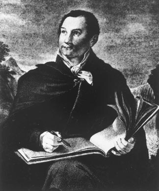
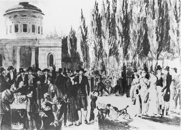

This is a static copy of the final website maintained by the Roy Rosenzweig Center for History and New Media.
Nikolai N. Bolkhovitinov The Declaration of Independence in Russian
The news of the adoption of the Declaration of Independence by the Continental Congress on July 4, 1776, was first reported in a Russian document on August 2 / 13. 1This was a brief notation in a dispatch from the Russian chargé d'affaires at London, Vasilii Grigor'evich Lizakevich, to the first minister of the College of Foreign Affairs, Count Nikita Ivanovich Panin. A detailed account of the content and significance of the declaration was given by the Russian diplomat a week later: "In the Declaration of Independence promulgated by the general Congress on July 4," wrote Lizakevich, are repeated all the colonies' previous grievances concerning the redress of which they had in vain addressed themselves to the King, to Parliament, and to the British nation. No longer seeing any hope of correcting the abuses which they have suffered, they have found themselves compelled to issue this solemn declaration, which proclaims the United Colonies a free and independent state, thereby severing all their previous ties with Great Britain. In consequence of their independence, the United Colonies have the right and the power to declare war, to conclude peace, to contract alliances, to establish trade, and so forth, pledging themselves to sacrifice their lives, their honor, and all their possessions in order to preserve all the aforementioned privileges. Although the Russian diplomat in his dispatch to the tsarist court was prudent not to mention high principles and the natural rights of man, it is to his credit that he evaluated the declaration and the courage of its creators very positively. "The publication of this document," Lizakevich concludes, "as well as the proclamation of a formal declaration of war against Great Britain offer evidence of the courage of the leadership there." 2 The Russian diplomat clearly emphasized that the document was a declaration of war on Britain. The reports of Russian diplomats from London, in particular the dispatch of Lizakevich, served as an important source of information for the head of the College of Foreign Affairs, Panin, and Catherine II (Catherine the Great) herself on the situation in America and contributed to the formation, within the tsarist government, of an opinion critical of Britain's policy toward her former colonies. It is significant that the empress repeatedly observed that separation of the American colonies from Britain was practically unavoidable and that Panin and his close colleagues found the reasons for the rebellion in North America in the "personal fault" of the British cabinet and believed that the separation of the colonies from their mother country did not conflict with the interests of Russia and might even be advantageous to her. 3 At that time, the Russian press published extensive and diverse information about the developments in America. The newspapers also published some materials about the activity of the Continental Congress, in particular, about the declaration of independence of the colonies from Britain, but the actual text of the Declaration of Independence was not published either in 1776 or for another eight decades. However, other sources of information were available to the educated circles of Russian society. The following announcement published in the newspaper S.-Peterburgskie Vedomosti in the fall of 1781 is typical: It is written from Philadelphia, July 28, that recently at the request of the American Congress, a collection of various acts of this Congress concerning the new administration of the thirteen United American provinces was published in that city, namely (1) The Constitutions of various independent states of America. (2) The Declaration of Independence of the aforementioned states. (3) The Articles of Confederation between these states. (4) The treaties concluded between His Majesty the King of France and the United American States. The collection consists of 226 pages in 8vo. folio, and those interested may order it from Holland. It is evident that the receipt of foreign books from abroad was a common practice in St. Petersburg. 4 Use of foreign languages, especially French, was widespread in Russian society of the eighteenth century and the first half of the nineteenth. Very popular was the famous treatise of the French philosopher the abbé Guillaume Raynal, Histoire des deux Indes, published several times in the 1770s and supplemented in 1780 with chapters devoted to the American Revolution. It is characteristic that Aleksandr Nikolaievich Radishchev, who glorified the American Revolution in his ode of the 1780s "Vol'nost' " (freedom), and who was the first to publish in Russian extracts from the constitutional acts of Pennsylvania, Delaware, Maryland, and Virginia, was thoroughly familiar with the Histoire des deux Indes. 5  Pavel Petrovich Svin'in (1787-1839) in an engraving by D. Koch from a painting by  Pavel P. Svin'in's watercolor Fourth of July in Centre Square, Philadelphia, is a A lofty appraisal of the Declaration of Independence and the Constitution of the United States of America can be found in a book by Pavel Svin'in, the first original book by a Russian author who had stayed in the United States. In 1811 - 1813 Svin'in was a member of the diplomatic mission of Russia in Philadelphia. "The Americans proved themselves fully deserving to enjoy those rights of true liberty and happiness that were the first foundation of the spirit of their government," wrote Svin'in, and he went on to communicate the announcement on July 4, 1776, of independence with "all injustices of the British government listed in 23 items." Svin'in also pointed out that the Americans "gave themselves a constitution which proved later on that it was framed and adopted by people of profound knowledge and great virtues." 6 Somewhat later, in the 1820s, American constitutional materials were widely used by the Decembrist revolutionary movement. The constitutional project of the Decembrist Nikita Murav'ev revealed much in common with the federal Constitution of 1787 and the constitutions of individual states. It is interesting to see that in his project the oath to be taken by the Russian emperor repeated almost word for word the oath of the American president, and the four prikazy ("offices") under Murav'ev's constitution (treasury, land and naval forces, foreign relations) corresponded to the initial departments of the United States government. For many Decembrists, America was a kind of "motherland of freedom." Comparing various systems of government, they generally put the United States "far in front." In Sergei G. Volkonskii's words, he and other "members were always talking about how the American Constitution is the best model for Russia." Nikolai I. Turgenev's famous statement "Le président -- sans phrases" summarized the results of the debates concisely and expressively: "The president, and nothing more need be said." That is, a republic was to be preferred, and why waste words unnecessarily? 7 It was rather dangerous to refer to American constitutional materials and, still more, to publish them or seek to act on them in Russia. A. N. Radishchev was exiled to Siberia; the leaders of the Decembrists' rebellion were hanged or sentenced to long terms of hard labor and exile. Even the periodical Dukh Zhurnalov (The spirit of journals), which was somewhat protected by Alexander I, was closed by the tsarist censorship (as I was able to find out) specifically for publishing a description of the American political system entitled "The Constitution of the North-American United Provinces" and, particularly, the introductory comments to "The State Calendar of the United States of America for 1819." 8 It is not surprising, therefore, that in the eighteenth and the first half of the nineteenth centuries the publication of the text of the Declaration of Independence in Russia turned out to be practically impossible. Only during the reforms of Alexander II at the turn of the 1860s, culminating in the emancipation of the serfs, were conditions created in Russia that made it possible for American constitutional acts and the Declaration of Independence to be published and openly discussed in the press. In 1863 a complete, though not quite accurate, text of the Declaration of Independence was given in a book by Aleksandr V. Lokhvitskii, a Moscow University graduate, who became a well-known lawyer and the author of numerous books and articles on law and government. According to a fair comment by Lokhvitskii, "the publication of this famous act was the beginning of the freedom of America," which the Americans won "with arms in hands," "guided by George Washington, the greatest man of his time." 9 Of course, the translation of the declaration in Lokhvitskii's book was not perfect. But now Russian readers were able, at last, to read the document in their mother language. And that was the most important result. Later on, the text of the Declaration of Independence was published in the supplement to a history of the United States by Edward Channing, in Pavel G. Mezhuev's book Velikii raskol anglosaksonskoi rasy (The great split of the Anglo-Saxon race), and elsewhere. 10 Mezhuev was an experienced teacher and the author of numerous books on the history of the United States that were widely used in Russian gymnasia and universities. The old Russian translations were also used when the Declaration of Independence was published in Soviet times. (This subject will be discussed in detail in the following article by Marina A. Vlasova.) The Declaration of Independence was always a hard nut for official Russia to crack, under both the tsarist and the Soviet regimes. It was difficult to disprove "self-evident truths" and to argue about the "unalienable" natural rights of man. Even in the last years of Joseph Stalin's life, when the authors of university textbooks characterized the Constitution of the United States as conservative and even reactionary, the Declaration of Independence was still considered as a "progressive document of its time." But it was specifically pointed out that, allegedly under the pressure of the poor masses, "the deputies of the Congress were even compelled to agree not to mention the right to property among the `natural rights' of man." 11 However, it appeared impossible for Soviet historiography to recognize unreservedly the progressive character of a "bourgeois" document. For this reason the idea of the "bourgeois narrow-mindedness" of documents preceding the epoch of socialism was established in our literature. The idea can be found in the literature from both the thaw period under Nikita S. Khrushchev and the first years of Mikhail Gorbachev's perestroika, and sometimes even in the 1990s. It is typical that a textbook still used in the history department of Moscow University says that "the Declaration of Independence embodies features of class and historical narrow-mindedness. It reflected the union of the bourgeoisie and the slave owners." 12 In my opinion the great documents of the American Revolution expressed not only the narrow interests of the bourgeoisie and planters, as our Soviet Americanists wrote, but also general human ideals and legal norms. A law serving only the narrow interests of one group, class, or ruler has few chances of surviving. The Declaration of Independence and the American Constitution have stood the test of time. The American Constitution is the oldest written one in the world, supplemented with only twenty-seven amendments (including the initial ten -- the Bill of Rights). 13 I was educated and spent almost all my life under the severe Soviet regime. Whenever possible, I tried to retain independence in my outlook, but Marxism--happily in its more liberal and creative implication--could not but exert an influence on me. I liked the idea of studying history "from the bottom up," paying attention to the state of the poor, African-Americans, national minorities, etc. I could not help, either, getting interested in two issues that constituted the main subjects for several leading American scholars studying the declaration: how the phrase "all men are created equal" should be understood and why, among the "unalienable" rights, "pursuit of Happiness" is mentioned instead of the usual word "property." 14 It was evident to me, as to many other researchers, that people are not equal even when they are born, and not just because one is born in a wealthy and another in a poor family, but because one turns out to be gifted with intellect and talent and another inherits a severe mental or physical disease. Besides, and this is very important, outside the high principles of the declaration when it was announced were found half a million African-Americans, tens of thousands of servants, all the female population, males under twenty-one, and the indigenous population of America -- Indians. Even if one considers only the free part of the grown-up white male population, the hired workers, tenants, and nonnaturalized foreigners were not, for different reasons, covered by the declaration. As a Soviet historian I might have had a strong temptation to explain all this by the "bourgeois narrow-mindedness" of the creators of the Declaration of Independence. But I could not imagine that Thomas Jefferson, Benjamin Franklin, or John Adams did not know and understand all those contradictions. I could not believe them to be narrow-minded people. The only thing that was left for me to do was to find some explanation, to find the logic behind all the restrictions related to the conditions of a particular place and time. Allow me to cite an appropriate paragraph from a book I published in 1980, in which I attempted to explain the logic of the creators of the Declaration of Independence according to the norms of British law of that time and taking into account the English language of the eighteenth century: If one refers to the dictionary of Dr. Johnson, authoritative in the eighteenth century, one can easily see that the word "man" was defined not only as "a human being" and "a man" ("not a woman") but also as "a wealthy or independent person." It was property and the independence associated with property that were then considered the most important constituent parts of liberty and necessary conditions of citizenship. Hired workers were dependent on the entrepreneur, tenants on the landowner, Catholics on the Pope. According to the logic of the bourgeois, at marriage the woman became the property of her husband, losing her independence, and hence she could not claim suffrage. There were widows and unmarried women, but they were deprived of citizenship not by "logic" but rather by "tradition." 15 I, as a man who lived in a country where the citizens were deprived of property, was very much attracted by property and the independence associated with it. The Soviet citizen, who was given his wages by the government and had no real property, could not actually express his own opinions, while the elections with only one candidate running turned out to be a farce. In this respect, it seemed to me substantiated that in eighteenth-century Massachusetts a Harvard College professor was not allowed to vote because he depended on the institution where he was given his salary, while a poor farmer in that very Massachusetts who could hardly make ends meet, possessing a plot of land and interested in the prosperity of the place where he was living, had suffrage. In the Soviet Union, the higher the salary of a professor or, even more, of an academician at a university or the Russian Academy of Sciences, the more difficult it was for him to assume an independent position and reject the money and privileges. It was not by chance that the academician Andrei D. Sakharov turned out to be such a rare exception among his well-to-do colleagues. But no matter how logical the suggested treatment of the word "man" seemed to me, it was necessary to explain why Jefferson changed John Locke's famous formula "Life, Liberty, and Property" to "Life, Liberty, and the Pursuit of Happiness." And this change was not accidental at all. The word "property" cannot be found in any surviving draft copies or preliminary versions of the Declaration of Independence. It is also known that when later the marquis de Lafayette acquainted Jefferson with the draft of the French Declaration of the Rights of Man and the Citizen, the American enclosed the words "right to property" in brackets, thereby suggesting their exclusion from the text. 16 Not mentioning property as an unalienable right, Jefferson, of course, did not oppose property as it is. The point is that he, like Jean-Jacques Rousseau, referred property not to natural but to civil rights, that is, he considered it as a historical category that depends on the will of the society and the state. But because the preamble to the Declaration of Independence lists "unalienable" or natural rights of man, of which nobody has the right to deprive him, the word "property" is absent there. Explaining later why property does not belong among the natural rights of man, Jefferson wrote, "No individual has, of natural right, a separate property in an acre of land, for instance. . . . Stable ownership is the gift of social law, and is given late in the progress of society." 17 There is every reason to assert that if property was not mentioned explicitly, it certainly was implied by the creators of the Declaration of Independence. The very "pursuit of Happiness" implied the pursuit of property, and it was to protect their property that the colonists rose to fight against Britain. The closeness or even the identity of "the pursuit of Happiness" with ownership of property is quite evident when one studies the most important legal acts of individual states -- such as the temporary state constitution of New Hampshire (1776) and the Massachusetts Bill of Rights (1780). Thus, for example, in the first article of the Massachusetts Bill of Rights prepared by John Adams, among "natural, essential, and unalienable rights" of man together with life and liberty was mentioned "that of acquiring, possessing, and protecting property; in fine, that of seeking and obtaining their safety and happiness." Earlier, in the Virginia Bill of Rights (1776) drafted by George Mason, life and liberty were combined "with the means of acquiring and possessing property, and pursuing and obtaining happiness and safety." All this proves that "pursuing and obtaining happiness and safety" did not conflict with "seeking property" and they even got entangled and combined with each other, constituting a single notion. 18 In my opinion, Soviet historians attributed an excessive importance to the change made by Jefferson from "property" to "the pursuit of Happiness" and exaggerated the differences in the opinions of Mason, Adams, and Jefferson. In the Continental Congress the wording of Jefferson did not cause special disputes, and the Declaration of Independence was adopted unanimously. Professor Nikolai N. Iakovlev suggested perhaps the most sophisticated interpretation of the words "pursuit of Happiness." He associated them with the need to raise the poor for a fight against Britain. Because the leaders of the American Revolution were "pragmatically thinking people," they "having approved the Declaration of Independence of 1776, thought it appropriate to change Locke's wording." However, the witty idea of Iakovlev seems to be rather a freak of imagination of an ingenious historian and not a serious interpretation having an impact on the historiography of the issue. 19 It is more important, in my opinion, to point out that in our literature the high principles of the Declaration of Independence (and also of the Constitution and the Bill of Rights) have never been considered as the expression of the individual rights of specific persons. Nevertheless, in the United States itself the words "Life, Liberty, and the pursuit of Happiness" primarily express the interests of the individual and not only, and not so much, abstract social goals and ideals. It is the belief that man himself manages his own life and fate that is, maybe, the highest value and the main feature of an American world outlook based on individualism, belief in competition, and freedom of entrepreneurship. Unfortunately, that main pragmatic value of the high principles of the Declaration of Independence was not shown in Russian historiography. Even in the latest Russian constitution many splendid ideas and principles are in reality not put into practice, and sometimes I have the impression that we are lost among those three pine trees that have long been cut down and rooted up in most civilized countries in the nineteenth or even in the eighteenth century. 20
Nikolai N. Bolkhovitinov (Moscow) is director of the Center for North American Studies of the Institute of World History and academician of the Russian Academy of Sciences. 1. Where two dates are given for the same day, the first is according to the Old Style calendar in use in Russia in the late eighteenth century, the second according to the New Style calendar in use in the West then. 2. Vasilii Grigor'evich Lizakevich to Nikita Ivanovich Panin, Aug. 2 / 13, 1776, opis' 35 / 6, delo 274, pp. 149 - 51, fond Snosheniia Rossii s Angliei (Archive of Foreign Policy of the Russian Empire, Moscow, Russia); Lizakevich to Panin, Aug. 9 / 20, 1776, in The United States and Russia: The Beginning of Relations, 1765 - 1815, ed. Nina N. Bashkina et al. (Washington, 1980), 36 (The translation of the last sentence is corrected). Unless otherwise indicated, all translations from Russian to English are my own. In the fall of 1783 Benjamin Franklin presented to Catherine II, through the Russian minister at Paris, Prince Ivan Sergeevich Bariatinskii, "the Constitution of the Thirteen United American Provinces" and "a medal at their independence" with an allegorical depiction of a winged liberty and the date of the adoption of the Declaration of Independence, July 4, 1776. See Ivan Sergeevich Bariatinskii to Catherine II, Aug. 30 / Sept. 10, 1783, ibid. , 209. For a description of the medal enclosed, see opis' 96 / 6, delo 394, pp. 12 - 13, fond Snosheniia Rossii s Frantsiei (Archive of Foreign Policy of the Russian Empire). 3. For details, see Nikolai N. Bolkhovitinov, Rossiia i voina SShA za nezavisimost' 1775 - 1783 (Russia and the war of the usa for independence, 1775 - 1783) (Moscow, 1976), 11 - 36; and Nikolai N. Bolkhovitinov, Russia and the American Revolution, trans. and ed. C. Jay Smith (Tallahassee, 1976), 1 - 29, 216 - 20. 4. Bolkhovitinov, Rossiia i voina SShA za nezavisimost', 132 - 63; Bolkhovitinov, Russia and the American Revolution, ed. Smith, 120 - 51, 238 - 43; St.-Peterburgskie Vedomosti, Oct. 26 / Nov. 6, 1781, # 50. 5. Guillaume Raynal, Histoire philosophique et politique des établissements et du commerce des Européens dans les deux Indes (Philosophical and political history of the establishments and commerce of Europeans in the two Indies) (10 vols., Geneva, l780 - 1781); Guillaume Raynal, Révolution de l'Amérique (The revolution of America) (London, 1781); Aleksandr N. Radishchev, Polnoye Sobraniye Sochinenii (Full collection of works), vol. I: Puteshestvie iz Peterburga v Moskvu (A journey from St. Petersburg to Moscow) (Moscow, 1938), 345 - 47. The American constitutional materials came to Radishchev's notice through a rare French edition, Recueil des loix constitutives des colonies anglaises confédérées sous la dénomination d'Etats-Unis de l'Amérique Septentrionale -- auquel on a joint les actes d'independence, de confédération et autres actes du Congrès general (Collection of constitutional laws of the English colonies, united into confederation as the United States of North America -- together with the acts of independence, of confederation, and other Acts of the General [Continental] Congress) (Philadelphia, 1778). 6. Pavel P. Svin'in, Vzglad na respubliku Soedinennykh Amerikanskikh oblastei (A view on the republic of the united American provinces) (St. Petersburg, 1814), 1, 5, 6. 7. The proposed oath was: "I do solemnly swear that I will faithfully execute the obligations of the Russian Emperor and will to the best of my Abilities, preserve and defend this Constitution of Russia." (Compare the Constitution of the United States, art. II, sec. 1). Like the American president, the Russian emperor would be under obligation "to give to the People's Veche Information of the State of Russia and to submit for its judgment the adoption of measures as he shall judge necessary or appropriate." ( Ibid. , sec. 3). For more details, see Nikolai N. Bolkhovitinov, Russko-amerikanskie otnosheniia 1815 - 1832 (Russian-American relations, 1815 - 1832) (Moscow, 1975), 492 ff.; and Nikolai N. Bolkhovitinov, "The Decembrists and America," Soviet Studies in History, 19 (Spring 1975), 44 - 72. Nikolai A. Bestuzhev, Stat'i i pis'ma (Articles and letters) (Moscow, 1933), 101; Vosstanie dekabristov (Decembrist revolt) (12 vols., Moscow, 1925 - 1969), XII, 91, IV, 206; Bolkhovitinov, Russko-amerikanskie otnosheniia, 503. 8. Dukh Zhurnalov, 1820, part 30, bk. 2, pp. 73 - 88, bk. 3, pp. 97 - 116, bk. 4, pp. 57 - 64, part 42, bk. 18, pp. 175 - 87. See Nikolai N. Bolkhovitinov, "The American Theme on the Pages of the Dukh Zhurnalov, " in Russian-American Dialogue on Cultural Relations, 1776 - 1914, ed. Norman E. Saul and Richard D. McKinzie (Columbia, Mo., 1997), 45 - 76. 9. Aleksandr V. Lokhvitskii, Obzor sovremennykh konstitutsii (A review of contemporary constitutions) (2 parts, St. Petersburg, 1863), part 2, pp. 113 - 18, esp. 118. Among his other writings are Aleksandr V. Lokhvitskii, O plennykh po drevnemu russkomu pravu XV - XVII vekov (On prisoners of war according to the ancient Russian law of the fifteenth through seventeenth centuries) (Moscow, 1855); Aleksandr V. Lokhvitskii, Guberniia, ee zemskie i pravitel'stvennye uchrezhdeniia (The province, its local and governmental bodies) (St. Petersburg, 1864); Aleksandr V. Lokhvitskii, Kurs russkogo ugolovnogo prava (A course on the Russian criminal law) (St. Petersburg, 1868). 10. Edward Channing, Istoriia Soedinennykh Shtatov Severnoi Ameriki, 1765 - 1865 (A history of the United States of North America, 1765 - 1865), trans. A. Kamenskii (St. Petersburg, 1897), 334 - 39; Edward Channing, Istoriia Severo-Amerikanskikh Soedinennykh Shtatov (A history of the North American United States), trans. E. I. Boshniak (Moscow, 1897), 378 - 85; Pavel G. Mezhuev, Velikii raskol anglosaksonskoi rasy (The great split of the Anglo-Saxon race) (St. Petersburg, 1901), 148 - 54. 11. Vladimir V. Birukovich et al., eds., Modern History, I (Moscow, 1951), 152, 165. 12. Anatolii V. Ado et al., eds., Modern History of the Countries of Europe and America: The First Period (Moscow, 1986), 87. 13. Nikolai N. Bolkhovitinov, "Sovetskaia amerikanistika na pereput'e: Starye dogmy i novye podkhody" (Soviet American studies at the crossroads: Old dogmas and new approaches), Voprosi istorii, 7 - 8 ( July - Aug. 1991), 3 - 12; Nikolai N. Bolkhovitinov, Novoe myshlenie i sovetskaia amerikanistika (New thinking and Soviet American studies) (Moscow, 1989); Nikolai N. Bolkhovitinov, "New Thinking and the Study of the History of the United States in the Soviet Union," Reviews in American History, 19 ( June 1991), 155 - 65. 14. See, for example, the commentary by Henry Steele Commager, in Thomas Jefferson, "The Declaration of Independence, 1776," ed. Henry Steele Commager, in An American Primer, ed. Daniel J. Boorstin (2 vols., Chicago, 1966), I, 73 - 75. 15. Nikolai N. Bolkhovitinov, SShA: Problemy istorii i sovremennaia istoriografiia (The usa : Problems of history and contemporary historiography) (Moscow, 1980), 95 - 96. 16. Julian P. Boyd, ed., The Papers of Thomas Jefferson (19 vols., Princeton, 1950 - ), XV, 230 - 33. 17. Thomas Jefferson to Isaac McPherson, Aug. 13, 1813, in The Writings of Thomas Jefferson, ed. Andrew A. Lipscomb and Albert E. Bergh (20 vols., Washington, 1905), XIII, 333. 18. Massachusetts Bill of Rights, 1780, in The Federal and State Constitutions. . . . , ed. Benjamin P. Poore (2 vols., Washington, 1878), I, 956; Virginia Bill of Rights, June 12, 1776, ibid. , 1908 - 9. 19. Nikolai N. Iakovlev, "Idei amerikanskoi revolutsii: Proshloe i nastoiashchee" (The ideas of the American Revolution: The past and the present), SShA -- ekonomika, politika, ideologiia (Moscow), 7 ( July 1974), 17. Analogous ideas can be seen later in the work of a radical American historian. See Howard Zinn, A People's History of the United States (New York, 1980), 73 - 75. 20. The Russian expression "to get lost among three pine trees" may be translated as "to be unable to see beyond the end of one's nose."
The Declaration of Independence:
A View from Russia
Vasili Andreyevich Tropinin. After representing the tsarist government in the United States, Svin'in praised the Declaration of Independence. From Avrahm Yarmolinsky, Picturesque United States of America 1811, 1812, 1813: Being a Memoir of Paul Svinin (New York, 1930), p. 2.
reproduction of an 1812 painting by John Lewis Krimmel and reflected his memories of serving in the Russian diplomatic mission in the United States between 1811 and 1813.
From Avrahm Yarmolinsky, Picturesque United States of America 1811, 1812, 1813: Being a Memoir of Paul Svinin (New York, 1930), plate 21.
I would like to thank Susan Armeny, who greatly improved my original text and made several insightful suggestions.
Readers may contact Bolkhovitinov at worldhis@igh1.msk.su.